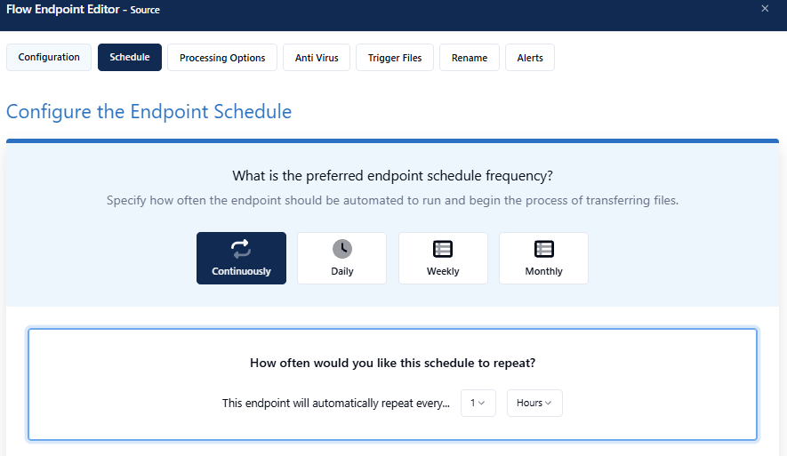
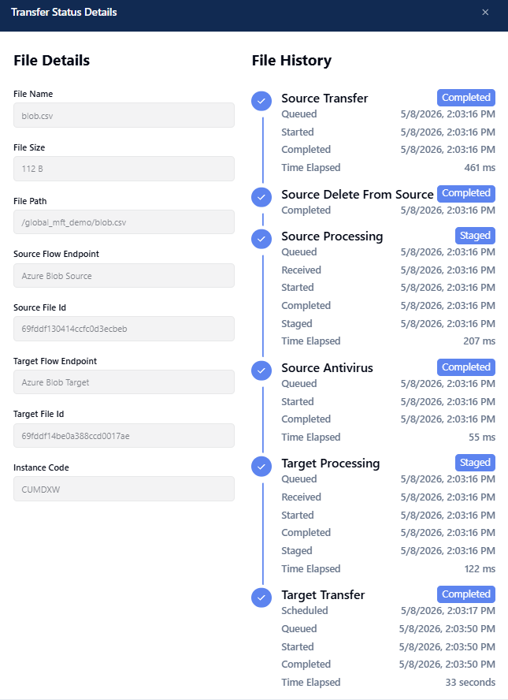
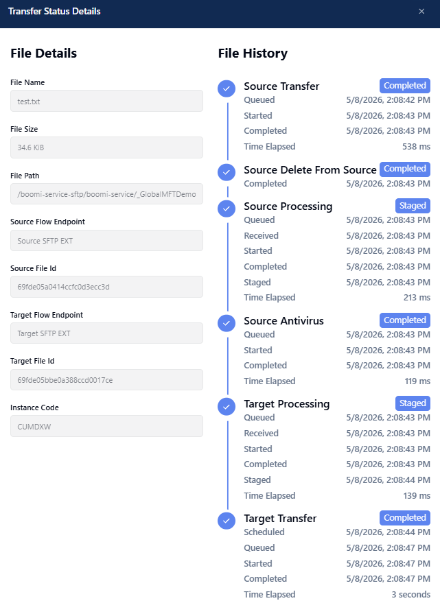

Scheduled & SFTP Pull Transfers
Two always-on flows — no manual upload needed. Both generate continuous activity that's visible the moment you filter.
Flow 03: Scheduled File Transfer Cloud to Cloud
A schedule-triggered flow moves files on a defined interval. Because it runs continuously, there's always completed activity to show without needing a manual upload. Ideal for demonstrating time-based automation and batch use cases — "files go at 9pm every night, no human touch."
Flow 04: SFTP Server Pull and Push
Instead of a partner pushing files to Boomi, Flow 04 shows MFT actively pulling from an external SFTP server. The file is delivered back to the same location, creating a perpetual loop. This isn't a production pattern — it's a demo fixture that generates continuous activity to demonstrate the pull pattern without requiring a real partner environment.
Flow 03: Open & Schedule Tab
Show how time-based triggers remove the need for partners to initiate transfers.
-
1
Navigate to Flows → Flow 03. Click the flow endpoint to open its configuration.
-
2
Open the Schedule tab. Show how the time-based trigger is configured — interval, start time, and recurrence settings.
Talking point: schedule-triggered flows are ideal for batch scenarios — ERP exports, end-of-day reports, regulatory submissions. The business defines the SLA; Boomi enforces it.

-
3
Show the Source Path configuration — this is where the runtime or cloud endpoint monitors for files on each scheduled interval.
Flow 03: Activity Review
Show a continuous stream of completed scheduled transfers in the Activity feed.
-
1
Navigate to Activity → filter by Flow 03 → Apply.
-
2
A continuous stream of Completed transfers is visible — every scheduled interval is logged. Click any entry to expand the file lifecycle.

Flow 04: Configuration & Pull Pattern
Demonstrate the push/pull contrast — MFT can initiate the transfer, not just receive it.
-
1
Find Flow 04 — SFTP Server Test Server in the Flows list. Open the flow endpoint for configuration.
-
2
Show the Source configuration — the source is an external SFTP endpoint. MFT is configured to poll and pull from the remote server on a schedule.
Talking point: the push/pull contrast is powerful for prospects coming from legacy MFT — most expect partners to push. Boomi can pull, giving the enterprise control over timing without coordinating with the partner.
-
3
Show the Delivery Target — the target is the same SFTP location. Explain the loop is deliberate for the demo — it keeps activity flowing without requiring a real partner environment.
Flow 04: Activity Review
Show files cycling in the pull-deliver loop with full inbound/outbound lifecycle.
-
1
Navigate to Activity → filter by Flow 04 → Apply.
-
2
Files going back and forth are visible. Click any Completed state badge to expand and show the full inbound/outbound lifecycle — pull from source, deliver to target.

Next up